图文实录 · 小红书 · 徐贰懂
关于镜头的光学素质 你或许要了解这些
光学素质先分成两件事：MTF 曲线量化的是反差和分辨率；老镜头那种「味道」来自曲线测不到的像差。选镜是在选「锐」还是选「性格」，不是选出一支绝对更好的头。
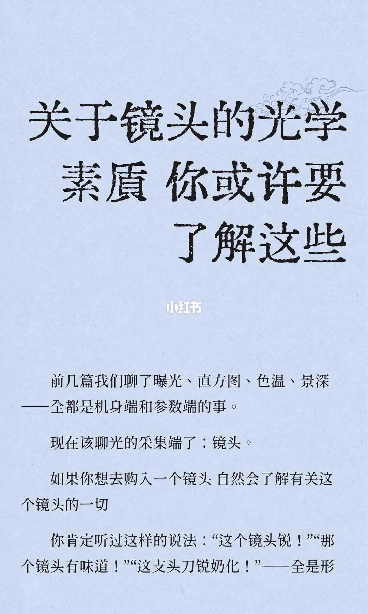
形容词停在感觉
前几篇谈的是机身端和参数端。这一篇改谈光的采集端。页上列出口语评价：「这个镜头锐」「那个镜头有味道」「这支头刀锐奶化」，并说这些全是形容词。句子在页底截断，下一页接「全是感觉」。
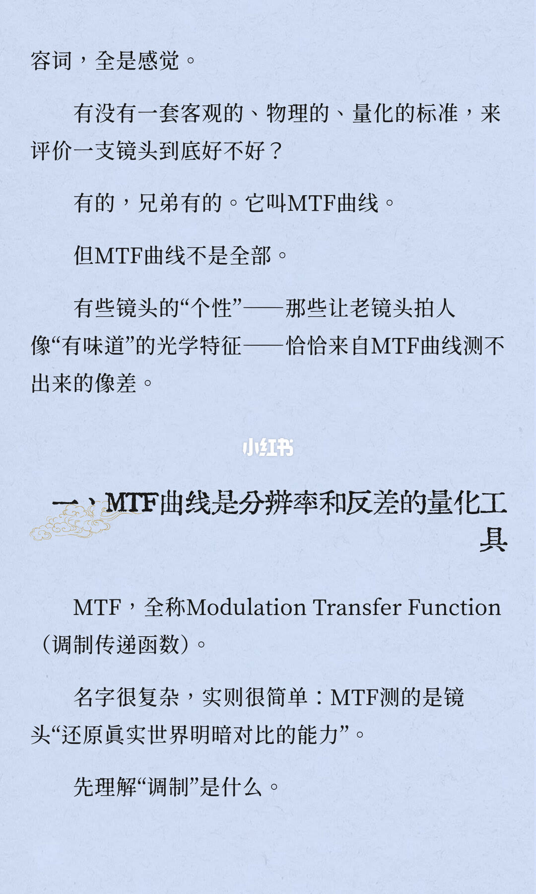
MTF 能量化，但不能代替性格
页首接上一页：这些说法全是感觉。作者给出的客观、物理、量化标准叫 MTF 曲线，随即补一句：曲线不是全部。老镜头拍人像「有味道」的那些光学特征，恰恰来自曲线测不出来的像差。
第一节标题是「MTF 曲线是分辨率和反差的量化工具」。全称印作 Modulation Transfer Function（调制传递函数）。解释是：测的是镜头还原真实世界明暗对比的能力。页末留下「先理解调制是什么」。
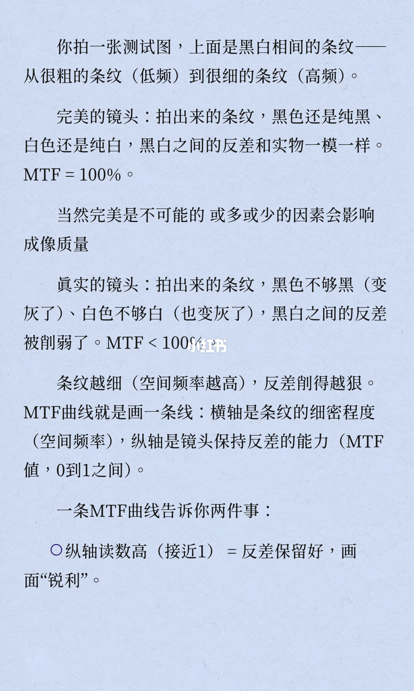
条纹越细，反差掉得越狠
测试图是从粗到细的黑白条纹：粗是低频，细是高频。完美镜头拍出来黑仍纯黑、白仍纯白，反差和实物一样，页上写 MTF = 100%。真实镜头黑和白都变灰，反差被削弱，页上写 MTF < 100%。作者另写完美不可能，成像会被各种因素影响。
曲线的画法：横轴是条纹细密程度（空间频率），纵轴是保持反差的能力（MTF 值，0 到 1）。第一件被点名的事：纵轴读数高、接近 1，等于反差保留好，画面显得锐利。第二件在下一页。
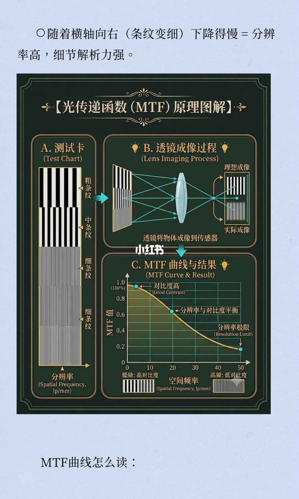
下降得慢，才叫细节还在
页首接第 3 页：横轴向右、条纹变细时，曲线下降得慢，等于分辨率高、细节解析力强。
图解标题是「光传递函数（MTF）原理图解」，分成三块。A 是测试卡，粗条纹、中条纹、细条纹往下变密，旁注分辨率，单位印作 lp/mm。B 是透镜把物体成像到传感器，并排理想成像和实际成像。C 是一条下降曲线，纵轴刻度印到 1.0（100%），中间有 0.8、0.6、0.4、0.2；横轴刻度印到 50。曲线旁的文字是「对比度高（Good Contrast）」「分辨率与对比度平衡」「分辨率极限（Resolution Limit）」。轴下写低频高对比度、高频低对比度。这些是示意图上的刻度和标注，页上没有把曲线交点写成某一支镜头的实测读数。
页末起句：「MTF 曲线怎么读」，读法在下一页。
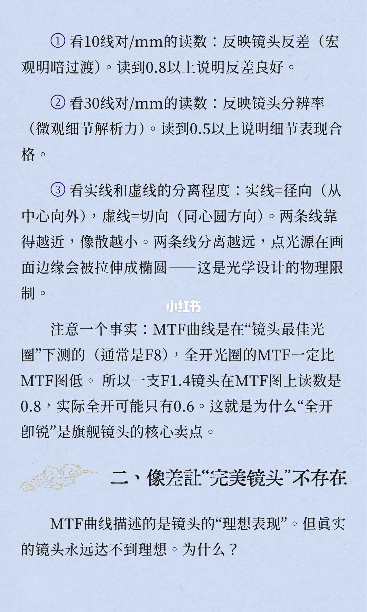
先看两条频率，再看实线虚线
① 10 线对/mm：反映反差，也就是宏观明暗过渡。读到 0.8 以上，页上说反差良好。② 30 线对/mm：反映分辨率，也就是微观细节。读到 0.5 以上，页上说细节合格。③ 实线是径向（从中心向外），虚线是切向（同心圆方向）。两条线越近，像散越小；分得越开，边缘点光源会被拉成椭圆。作者把这写成光学设计的物理限制。
测量条件也印在这一页：曲线通常在「镜头最佳光圈」下测，通常是 F8；全开的 MTF 一定比图上低。举例写成：一支 F1.4 镜头图上读数是 0.8，实际全开可能只有 0.6。这组 0.8 和 0.6 是作者举例，没有写镜头型号。作者用它说明「全开即锐」为什么是旗舰卖点。
第二节标题是「像差让完美镜头不存在」。MTF 被说成镜头的「理想表现」，真实镜头达不到。原因从下一页展开。
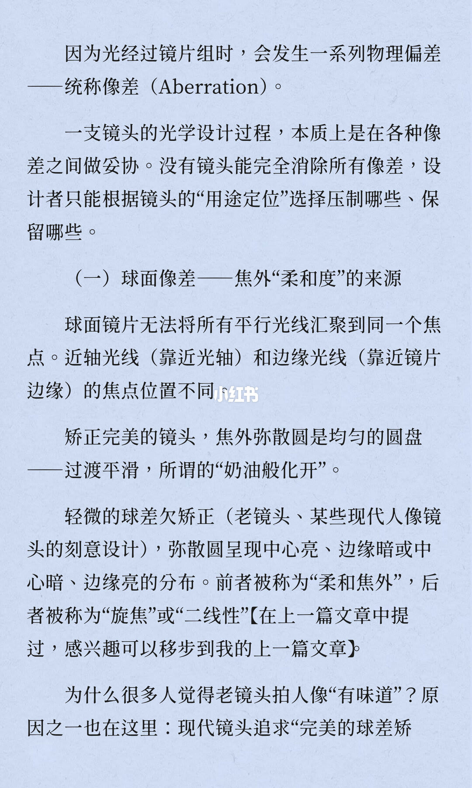
设计是在像差之间取舍
光经过镜片组会有物理偏差，统称像差（Aberration）。光学设计被写成妥协：没有镜头能消掉全部像差，设计者按用途决定压哪些、留哪些。
（一）球面像差，被标成焦外「柔和度」的来源。球面镜片不能把全部平行光聚到同一点：近轴光线和边缘光线焦点不同。矫正完美时，焦外弥散圆是均匀圆盘，过渡平滑，页上称为「奶油般化开」。轻微球差欠矫正时，弥散圆变成中心亮、边缘暗，或中心暗、边缘亮。前者称「柔和焦外」，后者称「旋焦」或「二线性」。作者注明后者在上一篇文章里写过。
老镜头拍人像「有味道」，原因之一被放在这里。页末句子断在「完美的球差矫」。
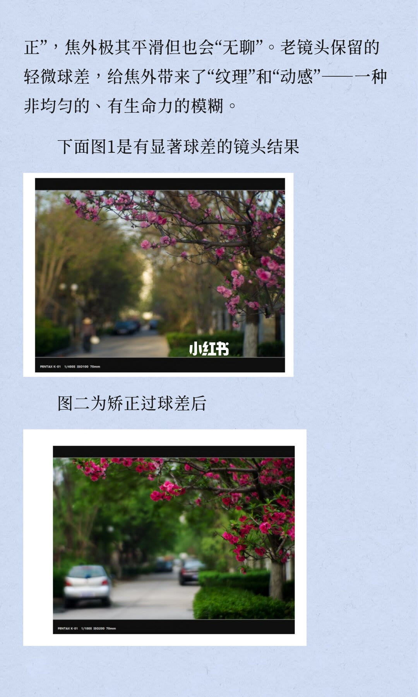
样片在比焦外纹理，曝光也变了
页首接上页：矫正之后，焦外极其平滑，但也会「无聊」。老镜头留下的轻微球差，给焦外带来「纹理」和「动感」，一种不均匀、有生命力的模糊。
图 1 的说明是「有显著球差的镜头结果」。画面是桃花和街道，左下印 PENTAX K-01、1/400s、ISO100、70mm。图二的说明是矫正过球差之后，左下印 PENTAX K-01、1/100s、ISO200、70mm。两张都是 70mm，光圈没有印出来。
冲突：正文把上下图的差别归因于球差矫没矫正。图上同时改了快门和 ISO，1/400s、ISO100 对 1/100s、ISO200。以图为准，这组对照不是只改了球差。
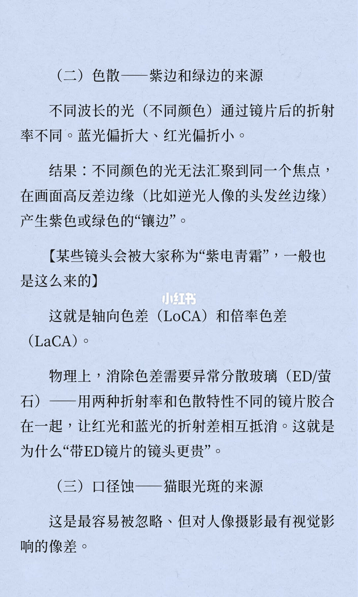
紫边来自波长，猫眼另算一笔
（二）色散，被标成紫边和绿边的来源。不同波长折射率不同：蓝光偏折大，红光偏折小，所以不同颜色不能聚到同一焦点。高反差边缘会出现紫或绿的镶边，例子是逆光人像的头发丝。作者把有些镜头被称为「紫电青霜」也归到这里，并写出轴向色差 LoCA、倍率色差 LaCA。消除办法印作异常分散玻璃（ED/萤石）：两种折射率和色散不同的镜片胶合，让红光和蓝光的折射差抵消。页上由此解释「带 ED 镜片的镜头更贵」。
（三）口径蚀，被标成猫眼光斑的来源，并说它容易被忽略，但对人像的视觉影响很大。定义在下一页。
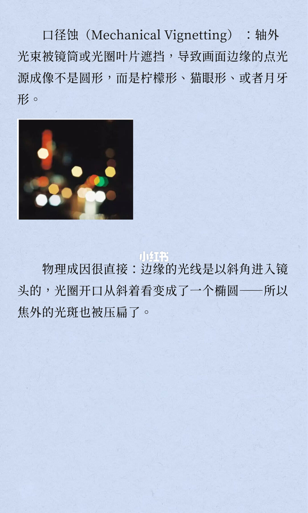
斜着看，圆孔变成椭圆
口径蚀的英文印作 Mechanical Vignetting。定义是：轴外光束被镜筒或光圈叶片遮挡，边缘点光源不再是圆，而是柠檬形、猫眼形或月牙形。中间配了一张夜景散景，中心光斑更圆，越靠边缘越扁。
成因写成：边缘光线斜着进镜头，光圈开口从斜向看变成椭圆，焦外光斑就被压扁。这一页没有光圈数字。
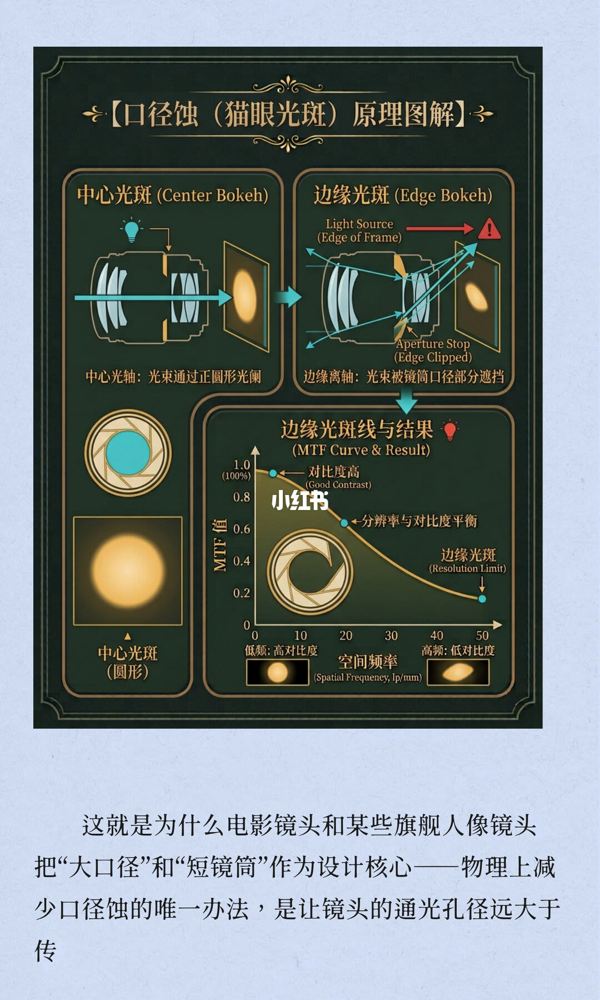
大口径、短镜筒，是为了少挡光
图解标题是「口径蚀（猫眼光斑）原理图解」。左侧中心光斑：光沿中心光轴通过正圆形光阑，结果是圆形光斑。右侧边缘光斑：光源标成画面边缘，光束被镜筒口径挡住，标注有 Aperture Stop（Edge Clipped），结果是被压扁的光斑。
冲突：右下角面板印着「边缘光斑线与结果」，英文却是 MTF Curve & Result，并重复第 4 页那套刻度：纵轴到 1.0（100%），横轴到 50，旁注对比度高、分辨率与对比度平衡、分辨率极限。正文讲的是镜筒把圆光斑切扁，这条下降曲线讲的是空间频率升高后反差下降。两套图不是同一件事。口径蚀以能读清的光路为准：中心过正圆光阑，边缘被镜筒挡住。
页末正文：电影镜头和某些旗舰人像镜头把「大口径」和「短镜筒」当设计核心。物理上减少口径蚀的办法，被写成让通光孔径远大于传感器的成像圈，好让边缘光线也能看全光圈开口。句首 OCR 两次都是「这就是什么」，读起来像缺了「为」，按图上印出的「什么」记下，不改成「为什么」。句子在「传」字截断。
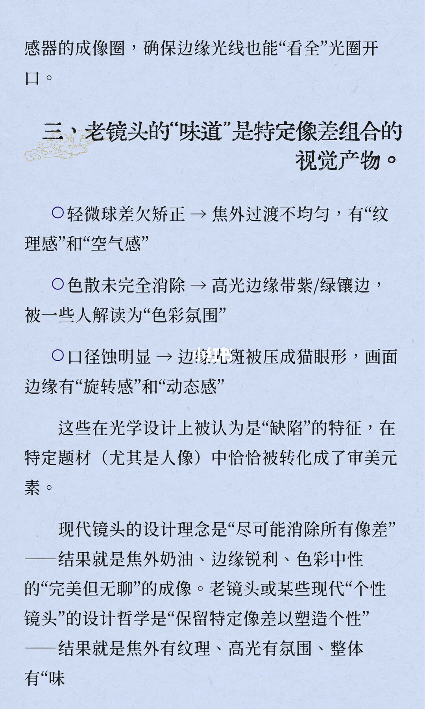
味道是三种像差叠出来的
页首接上页：通光孔径要大于传感器成像圈，边缘光线才能看全光圈开口。
第三节标题是「老镜头的味道是特定像差组合的视觉产物」。三条对应：轻微球差欠矫正，焦外过渡不均匀，有纹理感和空气感；色散没消干净，高光边缘带紫或绿边，有人把它读成色彩氛围；口径蚀明显，边缘光斑被压成猫眼，画面边缘有旋转感和动态感。
这些在光学设计里被当成缺陷，在人像里被转成审美。现代镜头的理念是尽可能消除所有像差，结果是焦外奶油、边缘锐利、色彩中性，作者称为「完美但无聊」。老镜头或某些现代个性镜头保留特定像差，结果是焦外有纹理、高光有氛围。句子断在「有味」。
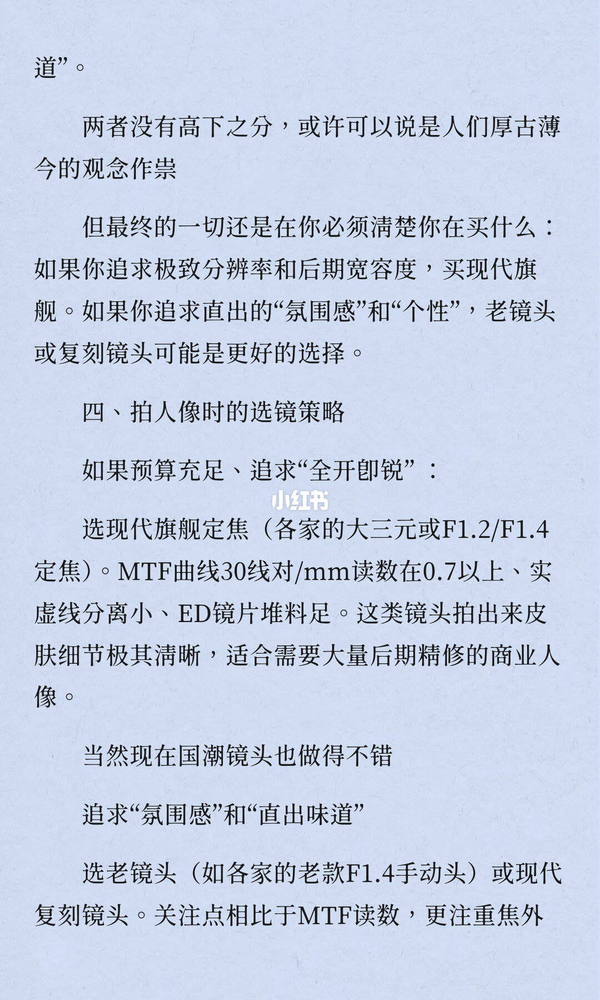
先决定买分辨率，还是买氛围
页首接「味道」。作者写两者没有高下，或许是厚古薄今在起作用，但购买时必须清楚自己在买什么：要极致分辨率和后期宽容度，买现代旗舰；要直出的氛围感和个性，老镜头或复刻镜头可能更合适。
第四节是拍人像时的选镜策略。预算充足、追求「全开即锐」：选现代旗舰定焦，括号里写「各家的大三元或 F1.2/F1.4 定焦」。判据是 MTF 曲线 30 线对/mm 读数在 0.7 以上、实线和虚线分离小、ED 镜片堆料足。用途是皮肤细节极清晰、需要大量后期精修的商业人像。另有一句：现在国潮镜头也做得不错。
冲突：标题路径写的是定焦，括号里却把大三元和 F1.2/F1.4 定焦并列。大三元通常不是定焦。以这句话的字面为准，作者把两类产品放进了同一个「旗舰定焦」括号。
追求氛围感和直出味道：选老镜头，例子是各家老款 F1.4 手动头，或现代复刻镜头。关注点从 MTF 读数转到焦外。句子在「焦外」截断。
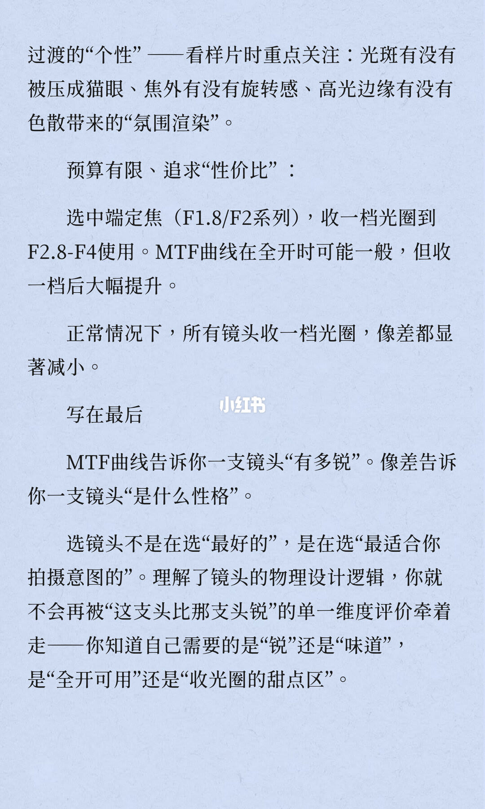
样片看三处，预算不够就收一档
页首接焦外过渡的「个性」。看样片时关注三处：光斑有没有被压成猫眼，焦外有没有旋转感，高光边缘有没有色散带来的氛围渲染。
预算有限、追求性价比：选中端定焦，印作 F1.8/F2 系列，收一档到 F2.8–F4 用。全开时 MTF 可能一般，收一档后大幅提升。作者补了一句普遍说法：正常情况下，所有镜头收一档，像差都显著减小。这里没有某一支镜头的实测曲线。
写在最后：MTF 曲线告诉你一支镜头有多锐，像差告诉你它是什么性格。选的不是最好的，是最适合拍摄意图的。理解物理设计之后，就不会只被「这支比那支锐」牵着走。要分清自己要的是锐还是味道，是全开可用，还是收光圈之后的甜点区。
结论
镜头素质在这套笔记里被拆成两把尺子。MTF 看反差和分辨率：纵轴高是反差，向右掉得慢是细节；阅读时看 10 线对/mm 是否到 0.8、30 线对/mm 是否到 0.5，实线径向和虚线切向靠不靠得近。像差看性格：球差改焦外纹理，色散改高光镶边，口径蚀改边缘光斑形状。人像选镜因此分成旗舰全开、老镜头或复刻、以及中端收到 F2.8–F4 三条路。
支撑主要在第 2–5 页（曲线怎么读、通常在 F8 测）、第 6–10 页（三种像差和猫眼）、第 11–13 页（味道从哪来、怎么选）。
边界：0.8、0.5、0.7 和 F1.4 那组 0.8 对 0.6 都是页上的阅读门槛或举例，不是某一支镜头的实验室报告。第 4 页曲线交点没有印出具体 MTF 值。第 7 页两张样片快门和 ISO 不同，不能单独证明球差。第 10 页光路和第 4 页 MTF 模板叠在同一张图里，口径蚀只采纳遮挡那一半。光圈只采用页上印出的 F8、F1.4、F1.2、F1.8、F2、F2.8–F4。